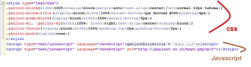
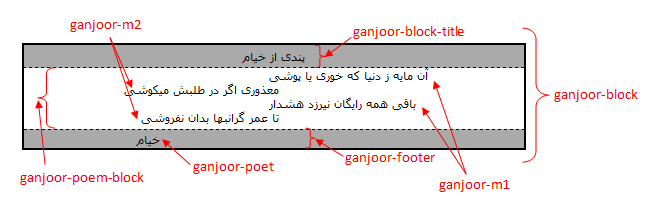

ساختار کد نمایش شعر گنجور
کد نمایش شعر گنجور دو بخش دارد. بخش اول مربوط به ظاهر بلوک شعر است (کدهای CSS که بین دو تگ style قرار دارند) و بخش دوم مربوط به اجرای فرایند دریافت شعر از سرور کدهای گنجور است (کد جاوا اسکریپت یا JavaScript).
بخش دوم (جاوا اسکریپت) نیز شامل دو بخش است (در تصویر بالا دو خط کد) که بخش اول که مشخص کنندۀ عنوان بلوک نمایش شعر است قابل حذف است (در صورت حذف این بخش، عنوان بلوک نمایش شعر «دردانهای از گنجور» خواهد بود) و بخش دوم عهدهدار اجرای بخش اصلی بارگذاری شعر تصادفی از سرور کدهای گنجور است.
برای طراحی یا بدلخواهسازی قالبهای نمایش شعر معمولاً باید بخش اول را دستکاری کرد و برای نمایش شعر از شاعر خاص یا نمایش دو بیت شعر برای رباعیها خط دوم کد جاوا اسکریپت را.
نمایش شعر از یک شاعر خاص
کد نمایش شعر گنجور به طور پیشفرض یک بیت شعر از حافظ، خیام، ابوسعید ابوالخیر، صائب تبریزی، سعدی، باباطاهر عریان، مولوی، اوحدی، خواجوی کرمانی، شهریار، عراقی، فروغی بسطامی، سلمان ساوجی، محتشم کاشانی، امیرخسرو دهلوی، سیف فرغانی، عبید زاکانی، هاتف اصفهانی یا رهی معیری را به صورت تصادفی انتخاب کرده، نمایش میدهد. اگر میخواهید محدودۀ انتخاب بیت را به یک شاعر خاص محدود کنید باید به جای کد پیشفرض، در کد جاوا اسکریپت دریافت شعر، پارامتر «شاعر» را تعیین کنید.
پارامتر «شاعر» به صورت «عدد=p» تعیین میشود که در این عبارت عدد میتواند حافظ (2)، خیام (3)، ابوسعید ابوالخیر (26)، صائب (22)، سعدی (7)، باباطاهر (28)، مولوی (5)، اوحدی (19)، خواجو (20)، شهریار (35)، عراقی (21)، فروغی بسطامی (32)، سلمان ساوجی (40)، محتشم کاشانی (29)، امیرخسرو دهلوی (34)، سیف فرغانی (31)، عبید زاکانی (33)، هاتف اصفهانی (25) یا رهی معیری (41) باشد. به عنوان نمونه برای نمایش یک بیت از حافظ (فال حافظ) کد جاوا اسکریپت به صورت زیر خواهد بود:
آنچه در کد بالا باعث انتخاب اشعار حافظ میشود عبارت «p=2» است که میتواند با «p=3» برای خیام، «p=26» برای ابوسعید و ... جایگزین شود.
نمایش دو بیت برای رباعیها و دوبیتیها
از آنجا که معمولاً یک بیت از یک رباعی یا دوبیتی معنی کاملی را نمیرساند و لازم است بیت دیگر نیز نمایش داده شود، میتوان کد نمایش شعر گنجور را به گونهای تنظیم کرد که برای این گونه شعرها، هر دو بیت شعر را نمایش دهد. برای این کار باید عبارت «a=1» را به کد جاوا اسکریپت نمایش شعر اضافه کنید:
کد بالا برای اشعار عادی یک بیت و برای رباعیها و دوبیتیها دو بیت را نمایش میدهد. ممکن است بخواهید با تعیین شاعر از میان شاعرانی که فقط دوبیتی یا رباعیهای آنها از طریق کد نمایش شعر گنجور در دسترس است (خیام با کد 3، باباطاهر با کد 28 و ابوسعید با کد 26) کد را طوری تنظیم کنید که همیشه دو بیت نمایش دهد. مثلاً با ترکیب آن با «p=3» برای نمایش فقط اشعار خیام میتوانید به این هدف دست پیدا کنید:
تعیین عنوان بلوک نمایش شعر
برای تعیین عنوان بلوک و تغییر آن از مقدار پیشفرض «دردانهای از گنجور» در خط اول کدهای جاوا اسکریپت متغیر ganjoorblocktitle را مقدار دهی کنید. مثلاً برای تغییر آن به «سخن عشق» خط مورد نظر را باید به این صورت تغییر دهید:
طراحی قالب دلخواه، سفارشیسازی رنگها و ...
برای طراحی قالب دلخواه یا سفارشیسازی رنگها باید با CSS آشنایی داشته باشید. تصویر زیر شمایی از ساختار بلوک نمایش شعر را در اختیارتان میگذارد:
میتوانید قالبهای پیشفرض و نمونههای در دسترس قرار گرفته در این صفحه را از نظر بگذرانید.